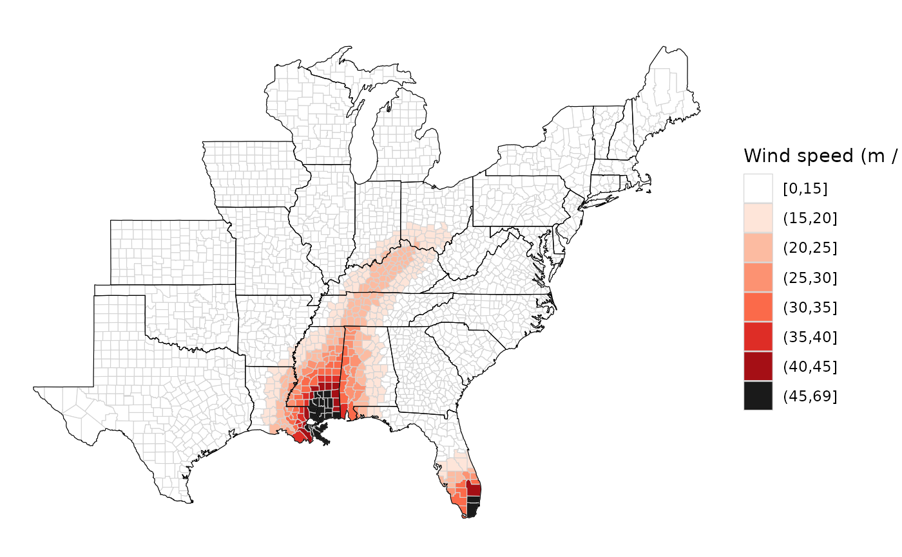

Inputs a dataframe with modeled winds for each eastern U.S. county and maps these modeled winds.
Arguments
- grid_winds
A dataframe that is the output of running
get_grid_windsusing eastern U.S. county centers as the grid point locations for modeling the winds.- value
A character string giving the value to plot. Possible options are
"vmax_gust"(maximum gust wind speeds) and"vmax_sust"(maximum sustained wind speeds).- break_point
An numeric value giving the value of the
valueparameter (e.g.,maximum gust wind speeds or maximum sustained wind speeds) at which to break for a binary map showing exposure versus no exposure. The default for this parameter isNULL, which returns a map with continuous wind speed values. If thebreak_pointargument is set to a numeric value, the function will return a map where counties are given binary classifications of "exposed" or "not exposed" based on whether modeled wind speed for the county is above or below this break point.- wind_metric
A character vector with the wind metric to use for the map. Possible values are
"knots"and"mps"(m / s, the default).
Value
This function returns a map of the ggplot class, plotting
exposure to hurricane winds by county for the eastern half of the United
States.
Examples
data("katrina_tracks")
data("county_points")
grid_winds_katrina <- get_grid_winds(hurr_track = katrina_tracks,
grid_df = county_points)
map_wind(grid_winds_katrina)
map_wind(grid_winds_katrina, wind_metric = "knots")
map_wind(grid_winds_katrina, value = "vmax_gust")

map_wind(grid_winds_katrina, break_point = 20)